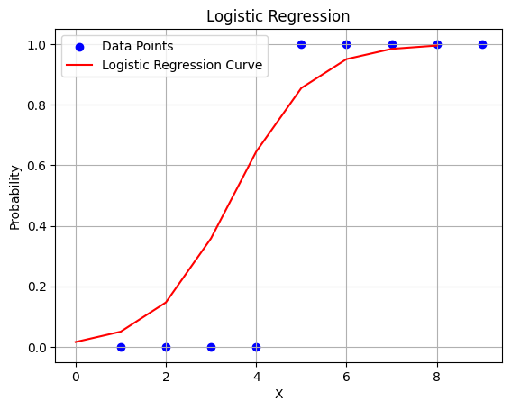

# Importing necessary libraries
import numpy as np
import pandas as pd
import matplotlib.pyplot as plt
from sklearn.linear_model import LinearRegressionTraining a model: Meaning

For one independent variable (feature)
- Understanding Linear Regression:
- Linear regression is a statistical method used to model the relationship between a dependent variable (often denoted as \(y\)) and one or more independent variables (often denoted as \(x\)).
- The relationship is modeled as a straight line equation: \(y = mx + b\), where \(m\) is the slope of the line and \(b\) is the y-intercept.
- Fitting a Model:
- When we say we’re “fitting a model” in the context of linear regression, it means we’re determining the best-fitting line (or plane in higher dimensions) that represents the relationship between the independent variable(s) and the dependent variable.
- This process involves finding the values of \(m\) and \(b\) that minimize the difference between the actual observed values of the dependent variable and the values predicted by the model.
- In simpler terms, fitting a model means finding the line that best describes the relationship between our input data and the output we want to predict.
- Python Code Example:
- Here’s a simple example of how you might fit a linear regression model using Python, particularly with the
scikit-learnlibrary:
- Here’s a simple example of how you might fit a linear regression model using Python, particularly with the
# Creating sample data
# Independent variable (feature)
X = np.array([[1], [2], [3], [4], [5]])
# Dependent variable (target)
y = np.array([2, 4, 5, 4, 5])# Creating a linear regression model
linear_regression_model = LinearRegression()
# Fitting the linear_regression_model to our data
linear_regression_model.fit(X, y)LinearRegression()In a Jupyter environment, please rerun this cell to show the HTML representation or trust the notebook.
On GitHub, the HTML representation is unable to render, please try loading this page with nbviewer.org.
LinearRegression()
# Printing the slope (coefficient) and intercept of the best-fitting line
print("Slope (m):", linear_regression_model.coef_[0])
print("Intercept (b):", linear_regression_model.intercept_)Slope (m): 0.6
Intercept (b): 2.2# Predictions
y_predicted = linear_regression_model.predict(X)y_predictedarray([2.8, 3.4, 4. , 4.6, 5.2])- In this code:
Xrepresents the independent variable (feature), which is a column vector in this case.yrepresents the dependent variable (target).- We create a
LinearRegressionmodel object. - We fit the model to our data using the
.fit()method. - Finally, we print out the slope (coefficient) and intercept of the best-fitting line.
Let’s do some visualization
# Plotting the linear regression line
plt.scatter(X, y, color='blue', label='Data Points')
plt.plot(X, y_predicted, color='red', label='Linear Regression Line')
plt.xlabel('X')
plt.ylabel('Y')
plt.title('Linear Regression')
plt.legend()
plt.grid(True)
plt.show()So, in summary, “fitting a model” means finding the best parameters (like slope and intercept in the case of linear regression) that describe the relationship between our input data and the output we want to predict.
For Multiple Independent Variables
If we have multiple independent variables (features) in \(X\), the process is still the same, but the equation becomes more complex. This is known as multiple linear regression.
Here’s how it works:
Here are the corrected texts with LaTeX formulas suitable for Jupyter notebooks:
- Understanding Multiple Linear Regression:
- Instead of a single independent variable \(x\), we have multiple independent variables represented as a matrix \(X\).
- The relationship between the dependent variable \(y\) and the independent variables \(X\) is modeled as: \[y = b_0 + b_1 x_1 + b_2 x_2 + \cdots + b_n x_n\] where \(b_0\) is the intercept, \(b_1, b_2, \ldots, b_n\) are the coefficients corresponding to each independent variable \(x_1, x_2, \ldots, x_n\).
- Fitting a Model with Many Variables:
- Fitting the model involves finding the values of the coefficients \(b_0, b_1, \ldots, b_n\) that minimize the difference between the actual observed values of the dependent variable and the values predicted by the model.
- The process is essentially the same as in simple linear regression, but with more coefficients to estimate.
- Python Code Example:
- Here’s how you might fit a multiple linear regression model using Python:
# Creating sample data with multiple variables
# Independent variables (features)
X = np.array([[1, 2], [2, 4], [3, 6], [4, 8], [5, 10]])
# Dependent variable (target)
y = np.array([2, 4, 5, 4, 5])# Creating a multiple linear regression model
multiple_linear_regression_model = LinearRegression()
# Fitting the multiple_linear_regression_model to our data
multiple_linear_regression_model.fit(X, y)LinearRegression()In a Jupyter environment, please rerun this cell to show the HTML representation or trust the notebook.
On GitHub, the HTML representation is unable to render, please try loading this page with nbviewer.org.
LinearRegression()
# Printing the coefficients (intercept and slopes) of the best-fitting line
print("Intercept (b0):", multiple_linear_regression_model.intercept_)
print("Coefficients (b1, b2):", multiple_linear_regression_model.coef_)Intercept (b0): 2.200000000000001
Coefficients (b1, b2): [0.12 0.24]- In this code:
Xrepresents the independent variables (features), where each row is a data point and each column represents a different feature.yrepresents the dependent variable (target).- We create a
LinearRegressionmodel object. - We fit the model to our data using the
.fit()method. - Finally, we print out the intercept and coefficients of the best-fitting line.
So, fitting a model with many variables involves finding the best parameters (coefficients) that describe the relationship between our input data (multiple independent variables) and the output we want to predict.
What about Logistic Regression?
Logistic regression is a type of regression analysis used for predicting the probability of a binary outcome based on one or more predictor variables. Here’s how the fitting process works with logistic regression:
- Understanding Logistic Regression:
- Logistic regression models the probability that a given input belongs to a particular category (binary classification problem).
- Instead of fitting a straight line or plane like in linear regression, logistic regression uses the logistic function (also known as the sigmoid function) to model the relationship between the independent variables and the probability of the binary outcome.
- The logistic function is defined as:
# z = b_0 + b_1x_1 + ... + b_nx_n
sigmoid = lambda z: 1 / (1 + np.exp(-z))def sigmoid(z):
prob = 1 / (1 + np.exp(-z))
return probprint('z = 1000000:', sigmoid(z=1000000))
print('z = 0.0000001:', sigmoid(z=0.0000001))z = 1000000: 1.0
z = 0.0000001: 0.50000025- Fitting a Logistic Regression Model:
- Fitting the logistic regression model involves finding the values of the coefficients \(b_0, b_1, ..., b_n\) that maximize the likelihood of observing the given data under the assumed logistic regression model.
- This is typically done using optimization techniques such as gradient descent or other optimization algorithms.
- The goal is to find the set of coefficients that best separates the two classes or minimizes the error between the predicted probabilities and the actual binary outcomes in the training data.
- Python Code Example:
- Here’s how you might fit a logistic regression model using Python with the
scikit-learnlibrary:
- Here’s how you might fit a logistic regression model using Python with the
# import the logistic regression model
from sklearn.linear_model import LogisticRegression# Creating sample data
X = np.array([[1], [2], [3], [4], [5], [6], [7], [8], [9]]) # Independent variable
y = np.array([0, 0, 0, 0, 1, 1, 1, 1, 1]) # Binary outcome (0 or 1)# Creating a logistic regression model
logistic_regression_model = LogisticRegression()
# Fitting the model to our data
logistic_regression_model.fit(X, y)LogisticRegression()In a Jupyter environment, please rerun this cell to show the HTML representation or trust the notebook.
On GitHub, the HTML representation is unable to render, please try loading this page with nbviewer.org.
LogisticRegression()
# Printing the intercept and coefficient(s) of the best-fitting logistic curve
print("Intercept (b0):", logistic_regression_model.intercept_)
print("Coefficient (b1):", logistic_regression_model.coef_)Intercept (b0): [-5.29559243]
Coefficient (b1): [[1.17808562]]- In this code:
Xrepresents the independent variable.yrepresents the binary outcome.- We create a
LogisticRegressionmodel object. - We fit the model to our data using the
.fit()method. - Finally, we print out the intercept and coefficient(s) of the best-fitting logistic curve.
# Predicted probabilities
probabilities = logistic_regression_model.predict_proba(X)probability_of_1 = logistic_regression_model.predict_proba(X)[:, 1]# Plotting the logistic regression curve
plt.scatter(X, y, color='blue', label='Data Points')
plt.plot(probability_of_1, color='red', label='Logistic Regression Curve')
plt.xlabel('X')
plt.ylabel('Probability')
plt.title('Logistic Regression')
plt.legend()
plt.grid(True)
plt.show()
So, fitting a logistic regression model involves finding the best parameters (coefficients) that describe the relationship between our input data and the probability of the binary outcome.
Don’t miss out on any updates and developments! Subscribe to the DATAIDEA Newsletter it’s easy and safe.
from dataidea import np,pddataf = pd.DataFrame(
data={
'income': [1000, 2000, 3000],
'age': [10, 20, 30]
}
)
dataf| income | age | |
|---|---|---|
| 0 | 1000 | 10 |
| 1 | 2000 | 20 |
| 2 | 3000 | 30 |
def model (gradient, intercept, x_values):
y_pred = [gradient * x_value + intercept for x_value in x_values]
return y_predy_pred = model(gradient=100, intercept=0.1, x_values=dataf.age)dataf['pred'] = y_pred
dataf['loss'] = pow(dataf.income - y_pred, 2)dataf| income | age | pred | loss | |
|---|---|---|---|---|
| 0 | 1000 | 10 | 1000.1 | 0.01 |
| 1 | 2000 | 20 | 2000.1 | 0.01 |
| 2 | 3000 | 30 | 3000.1 | 0.01 |
cost1 = np.mean(dataf.loss)cost10.009999999999989387